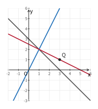

ホーム ＞ 数学II ＞ 点と直線
2直線 \(x+y-3=0\)、\(2x-y=0\) の交点と、点 \(Q(3,\ 1)\) を通る直線の方程式を求めよ。
2直線 \(f=0,\ g=0\) の交点を通る直線は \[f+kg=0\quad(k\text{ は定数})\] と表せる。交点を計算せず、もう1つの条件（通る点など）で \(k\) を決める。
2直線 \(x+y-3=0\)、\(2x-y=0\) の交点を通る直線は、定数 \(k\) を使って
と表せる。（\(2x-y=0\) そのものは表せない点に注意。）
\(x=3,\ y=1\) を代入：
整数係数に直して

【答案（テストに書く形）】
答